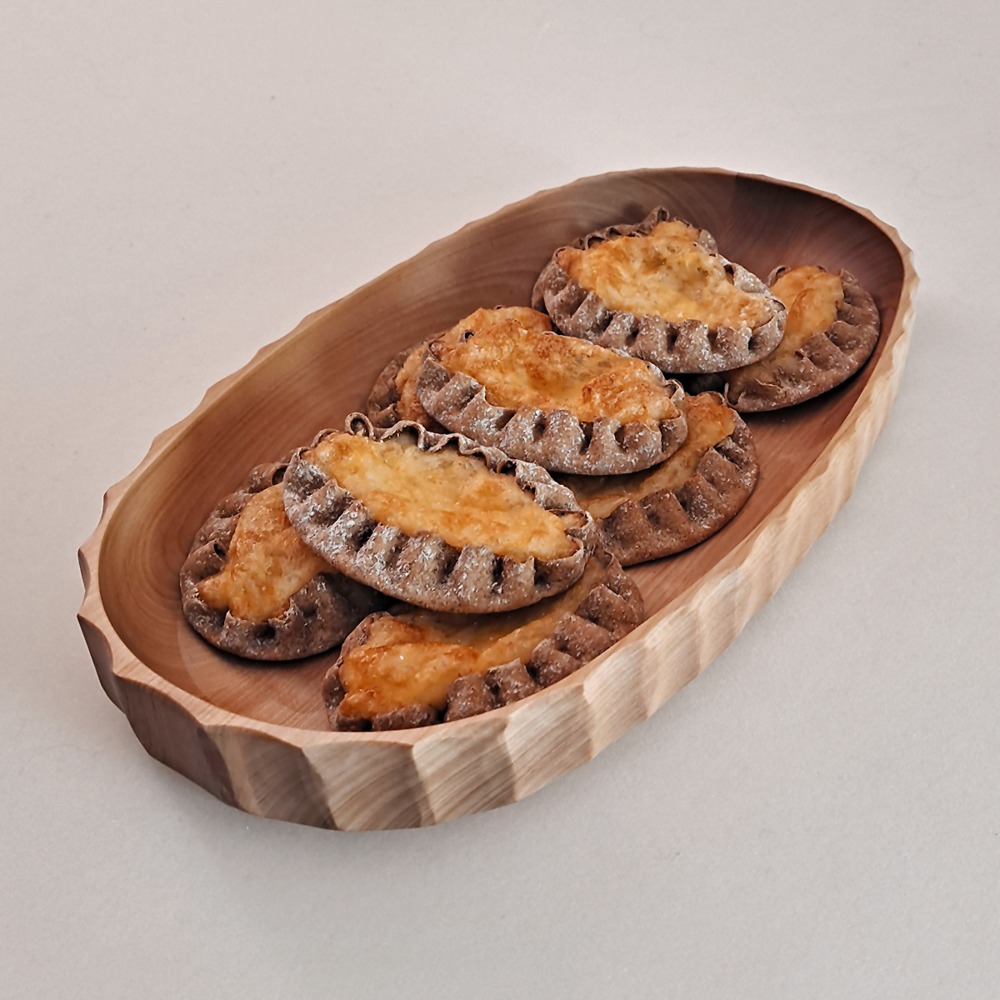
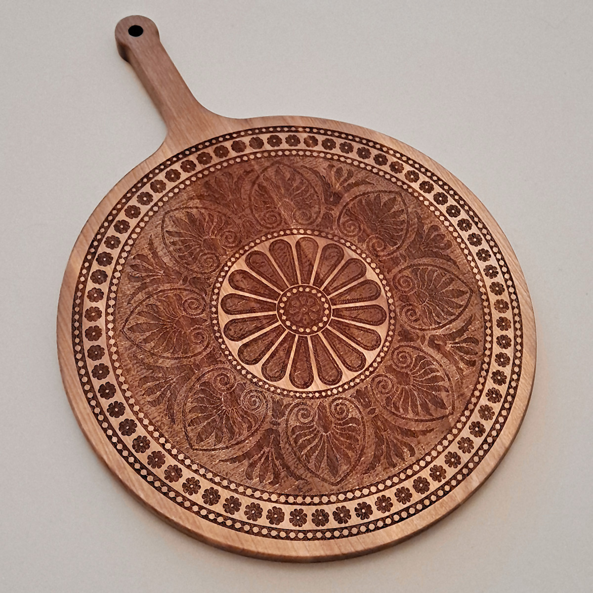
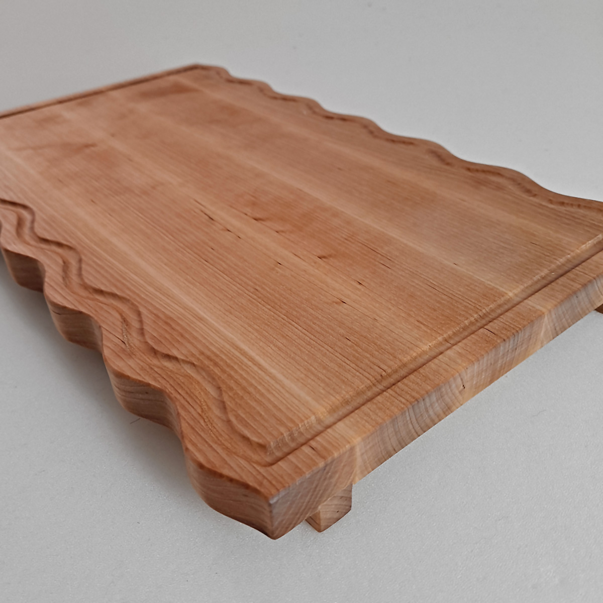
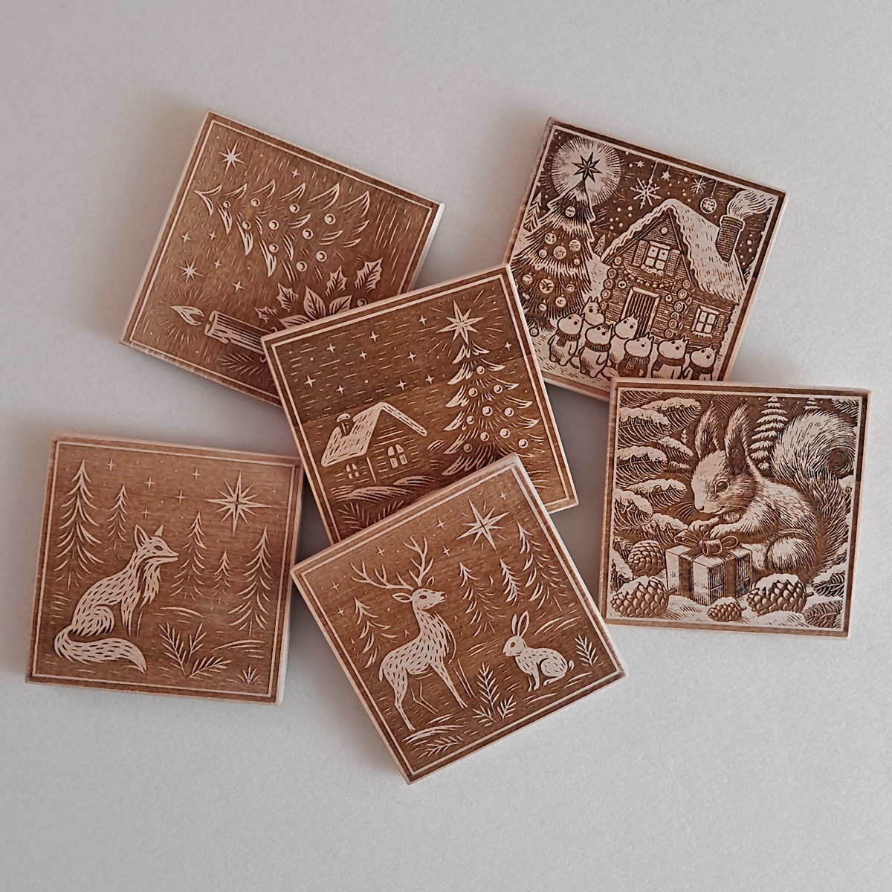

Soikea puulautanen massiivipuusta, noin 40 cm pitkä (385 × 210 × 40 mm), yhdistää luonnollisen kauneuden ja käytännöllisyyden. Se sopii täydellisesti tarjoiluun ja on erinomainen lahja mihin tahansa tilaisuuteen.

Tämä pyöreä pizzalauta koivumassiivista, pitkällä mukavalla kahvalla ja kauniilla kuviolla, on tyylikäs ja käytännöllinen lisä keittiöön. Täydellinen lahja kotiin, juhliin ja sisustuksen koristamiseen. Tutustu tarkemmin nähdäksesi kaikki sen edut!

Koivumassiivinen keittiölauta, jonka reunat ovat alkuperäisesti aaltoilevat, yhdistää käytännöllisyyden, kestävyyden ja tyylikkään muotoilun. Käytännöllinen ura, jalat-liukuratkaisu ja brändätty logo tekevät siitä paitsi toimivan työvälineen myös esteettisen keittiöelementin.

Tyylikkäät koivumassiiviset lasinaluset suojaavat pöytää tahroilta ja koristavat samalla kattausta. Laserkaiverrus, jonka kuvion voi valita, tekee tästä sarjasta erinomaisen lahjan ja kodikkaan yksityiskohdan mihin tahansa tilaisuuteen.
Opiskelen Sampossa puualan artesaaniksi. Puusepäntaidot, 3D-mallinnus (Onshape), CNC-perusteet, hyvät matemaattiset taidot. Kokemusta graafisesta suunnittelusta ja verkkosuunnittelusta.
Puualan artesaaniopinnoissa Saimaan ammattiopisto Sampossa valmistetut puutyöt ja harjoitustyöt.
Tässä osiossa on esillä erilaisia graafisia töitäni, kuten merkkejä, logoja, patterni-kuvioita, kirjoja.